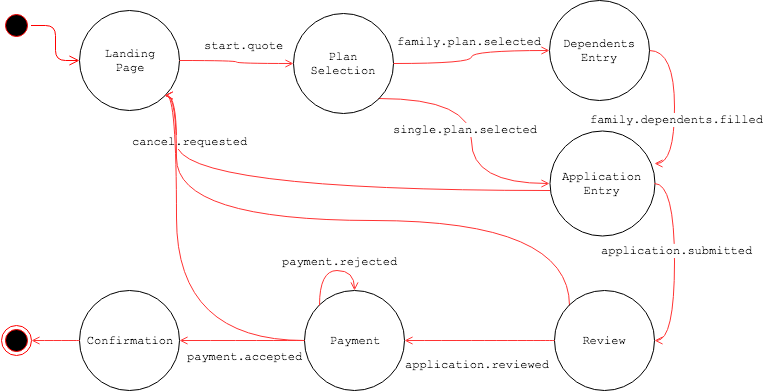
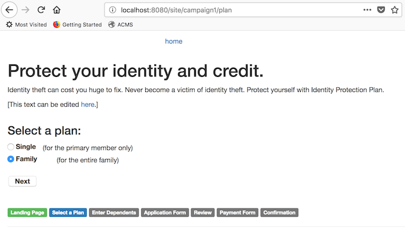
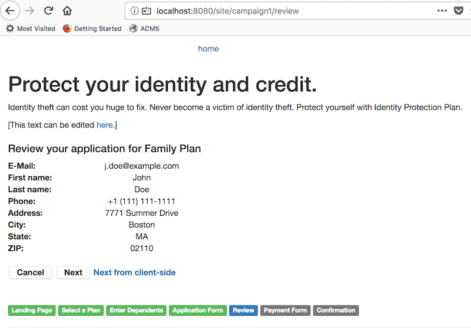

You can build and install the module locally first in the project root folder.
$ mvn clean install
And you can build and run the Demo project:
$ cd demo $ mvn clean verify && mvn -Pcargo.run
For testing, visit http://localhost:8080/site/campaign1.
In the demo project, the Page Flow definition for the channel (http://localhost:8080/site/campaign1) is defined in the following document:
The above Page Flow Definition document defines all the page states, events and transitions in the document editor.
It is actually represents the following Finite State Machine diagram:

The demo project includes multiple pages and HST Components depending on the Page Flow Definition shown above. When you visit http://localhost:8080/site/campaign1, you may start a Page Flow instance with the following first step:
In this page state, when you click on “Start!” button, it posts the form to the HstComponent’s #doAction() method which could trigger a page transition by sending an event.
In this page state, when you click on “Next” button after selecting a plan, it posts the form to the HstComponent’s #doAction() method which could trigger a page transition by sending an event.

In this page state, when you click on “Next” button after adding more than one dependent’s first name and last name, it posts the form to the HstComponent’s #doAction() method which could trigger a page transition by sending an event.
In this page state, when you click on “Next” button after entering application information, it posts the form to the HstComponent’s #doAction() method which could trigger a page transition by sending an event. If you didn’t enter any required inputs, then it wouldn’t trigger a transition, resulting in staying in the same page.
When you click on “Cancel” button, the HstComponent will send the “cancel.requested” event, which results in going back to the first page state.
In this page state, when you click on “Next” button after reviewing the inputs, it posts the form to the HstComponent’s #doAction() method which could trigger a page transition by sending an event.
When you click on “Cancel” button, the HstComponent will send the “cancel.requested” event, which results in going back to the first page state.
The “Next from client-side” button is placed for demonstration purpose. The client-side JavaScript action on the button’s click, makes an AJAX call on an HST Resource URL to send an event which could trigger a page flow transition, and make a page redirection from the client-side based on the result.

In this page state, when you click on “Pay Now!” button after entering the inputs, it posts the form to the HstComponent’s #doAction() method which could trigger a page transition by sending an event.
When you click on “Cancel” button, the HstComponent will send the “cancel.requested” event, which results in going back to the first page state.